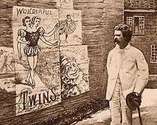
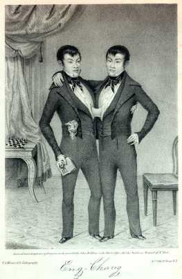

|
 Samuel Clemens had an older brother -- Orion, and a younger brother -- Henry. Several of MT's characters are modeled on each of them, and the envy that is such a prevalent theme in his life and work can probably be traced back to sibling rivalries with them. But Sam Clemens had no twin, so there's no obvious biographical way to account for his lifelong fascination with various kinds of twinship. In "Those Extraordinary Twins," as in MT's other imaginative engagements with the figure of a linked and divided self, the trope of the twin serves to dramatize psychological conflict: the mysteries of an individual's identity. On the other hand, the swapped babies in Pudd'nhead Wilson, like the twinned but unrelated Prince and Pauper, use the figure of the double to explore the socially constructed identities of race and class. The first two items below concern the real "Siamese Twins" and Tocci brothers who gave MT entities onto which he could project his preoccupation with twinship. The other items are different Twain texts, from both before and after he started his farce about the extraordinary twins and wound up with "two stories tangled together." I haven't marked Twain himself for inclusion here, though of course the name Sam Clemens chose for himself is also a sign of this preoccupation. 
|